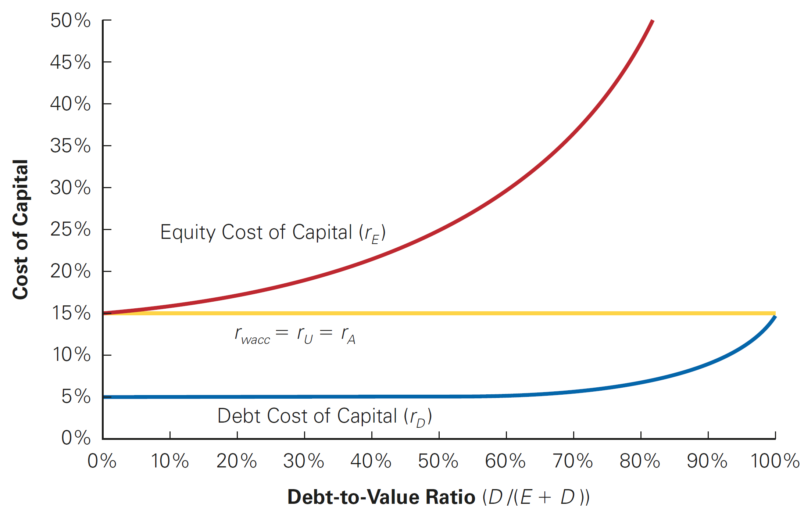
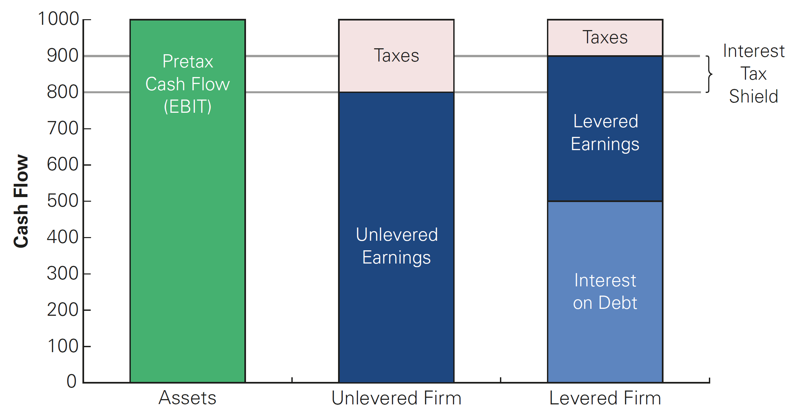
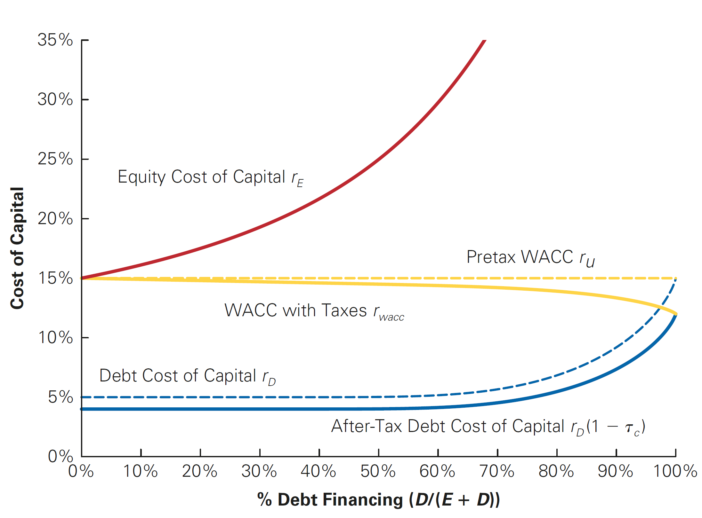

Debt and Taxes
Outline
This lecture is mainly based the following textbooks:
Study review and practice: I strongly recommend using Prof. Henrique Castro (FGV-EAESP) materials. Below you can find the links to the corresponding exercises related to this lecture:
- Multiple Choice Exercises - click here
\(\rightarrow\) For coding replications, whenever applicable, please follow this page or hover on the specific slides with coding chunks.
A recap from Modigliani and Miller
In our previous lecture, we saw the how the Modigliani and Miller propositions played a key role in explaining capital structure decisions:
In perfect capital markets, the total value of a firm’s securities is equal to the market value of the total cash flows generated and is not affected by its choice of capital structure
Moreover, the cost of capital of levered equity increases with the firm’s market value debt equity ratio:
\[ \small r_E=r_U+\dfrac{D}{E}(r_U-r_D) \]
\(\rightarrow\) As a consequence, the weighted average cost of capital, WACC, should not be affected by the mix of debt and equity!
WACC dynamics (Perfect Capital Markets)

Why should I bother about Modigliani and Miller?
You may well think…but we are not in a perfect capital market, so why should I bother? That goes hand in hand with the Modigliani and Miller findings:
- If capital markets were perfect (as in the Modigliani and Miller world), then the value of a firm should not be affected by any financial transaction…
- … this implies that if there is a financial transaction that appears to be profitable, it must be that it is exploiting some type of market imperfection!
Knowing how these imperfections affect the firm value is important for business and policy considerations
- For example, what happens if you remove the tax-shield from debt interest payments? What if the government decides to tax dividends differently?
- These (and other) actions may create/remove market imperfections that will tweak the real-practice results away/closer to the Modigliani-Miller findings!
Reconciling Modigliani and Miller with Debt
Question: if capital structure does not matter, why is debt so abundant?
The statement that capital structure decisions are irrelevant for the value of a firm are difficult to reconcile with the observation that firms invest significant resources, both in terms of managerial time and effort and investment banking fees, in managing their capital structures
In many instances, the choice of leverage is of critical importance to a firm’s value and future success:
- Firms issue large amounts of debt to pay dividends
- Large funds buy companies issuing substantial amounts of debt through leveraged buyouts
\(\rightarrow\) Therefore, if capital structure does matter, then it must stem from a market imperfection!
- In this lecture, we focus on one such imperfection — taxes. As we’ll see, when imperfections from taxes are present, managers can increase the value of a firm through leverage!
The Interest Tax Deduction
- In most cases, firms pay taxes on their profits only after interest payments are deducted
- Interest expense reduces the amount of corporate taxes
- As a consequence, this creates an incentive to use debt
| With Leverage | Without Leverage | |
|---|---|---|
| EBIT | $2,800 | $2,800 |
| Interest Expenses | -$400 | $0 |
| Income before tax | $2,400 | $2,800 |
| Taxes (35%) | -$840 | -$980 |
| Net income | $1,560 | $1,820 |
- Investors receive \(\small \$1560 + \$400\) (with leverage) versus \(\small \$1820 + 0\) (without leverage). Therefore, in the presence of taxes, leverage increases firm value (equity value + debt value) because the total cash flow received by investors increases!
The Interest Tax Deduction, continued
- We saw that firms can increase value in the presence of taxes through levering up. By how much the firm value increases? You can see that the value of the
\[ \small \underbrace{980}_{\text{Int. Expenses w/ leverage}} - \underbrace{840}_{\text{Int. Expenses w/o Leverage}} = \underbrace{140}_{\text{Interest Tax-Shield}} \]
- The Interest Tax-Shield is the reduction in taxes achieved due to the higher leverage. Assuming a tax-rate of \(\small 35\%\), we can calculate it as:
\[ \small \text{Tax-Shield}= \tau \times \text{Interest Payments} \rightarrow 35\% \times 400 = 140 \]
- In words, because interest expenses reduce the amount of taxable income, the firm pay less taxes!
Valuing the Interest Tax Shield
When a firm uses debt, the interest tax shield provides a corporate tax benefit each and every year when interest payments are computed:
It is if the firm was receiving an extra cash flow each year, and this will be used to pay down investors (debtholders + shareholders)
This benefit is then computed as the present value of the stream of future interest tax shields the firm will receive
As a consequence, the value of the firm, when calculated on the basis of the discounted future cash-flows, will increase due to leverage! Formally, we can reframe our Modigliani-Miller Proposition I in the presence of with taxes: the total value of the levered firm exceeds the value of the firm without leverage due to the present value of the tax savings from debt:
\[ \small \underbrace{V^L}_{\text{Value of Levered Firm}} = \underbrace{V^U}_{\text{Value of Unlevered Firm (all-equity)}} + \underbrace{PV(ITS)}_{\text{Value of Tax-Shields}} \]
Levered and Unlevered Value

\(\rightarrow\) By increasing the cash flows paid to debt holders through interest payments, a firm reduces the amount paid in taxes!
Valuing the Interest Tax Shield, practice
Suppose ALCO plans to pay 60 million in interest each year for the next eight years, and then repay the principal of 1 billion in year 8. These payments are risk free, and ALCO’s marginal tax rate will remain 39% throughout this period. If the risk-free interest rate is 6%, by how much does the interest tax shield increase the value of ALCO?
\(\rightarrow\) Solution: The annual interest tax shield that is accrued to the firm in years 1 to 8 is:
\[ \small 1\text{ billion}\times 6\% \times 39\% = 23.4\text{ million} \]
- Therefore, we can calculate the present value of the tax-shields as:
\[ \small PV(ITS) = \frac{23,4}{(1+6\%)^1} + . . . + \frac{23,4}{(1+6\%)^8} = 145.31 \text{ million} \]
Valuing the Interest Tax Shield in practice
When analyzing levered firms, one may think about several debt dynamics that can occurs. Typically, the level of future interest payments is uncertain due to factors such as:
- Changes in the marginal tax rate;
- Amount of debt outstanding;
- Interest rate on the actual debt;
- Firm’s risk, among others
Question: how can we value the interest tax-shield when taking these nuances in consideration? For simplicity, we’ll start by considering the special case in which the above variables are kept constant. This is reasonable because:
- Many corporations have policies for fixed amounts of debt
- As old bonds and loans mature, new borrowing takes place
- Finally, debt can be assumed as permanent, because it is fixed through time
Case I: Valuing the Interest Tax Shield - Permanent Debt
- Suppose a firm borrows a given level of debt \(D\) and keeps the it permanently on its balance-sheets. If the firm’s marginal tax rate is \(\tau_c\), and if the debt is riskless with a risk-free interest rate \(r_f\), then the interest tax shield each year is \(\tau_c \times r_f \times D\), and the tax shield can be valued as a perpetuity:
\[ \small PV(ITS) = \frac{\tau_c \times \text{Int. Expenses}}{r_f} = \frac{\tau_c \times (r_f \times D)}{r_f} = \tau_c \times D \]
- For example, given a \(\small 21\%\) corporate tax rate, this equation implies that for every \(\small \$1\) in new permanent debt that the firm issues, the value of the firm increases by \(\small \$0.21\)!
Valuing the Interest Tax Shield - Dynamics
You may wonder from where the increased value of the levered firm (\(\small V^L > V^U\)) came from
It is easy to see that when a firm uses debt financing, the cost of the interest it must pay is offset to some extent by the tax savings from the interest tax shield. Assuming a marginal tax-rate of \(\small \tau_c = 21\%\) and a permanent level of debt \(\small D = 100,000\), at \(\small10\%\) percent interest per year:
| Interest expense | $10,000 |
| Tax savings | - $2,100 |
| After-tax cost of debt | $7,900 |
- Therefore, the effective (or after-tax cost of debt) is:
\[ \small \underbrace{r_d}_{\text{Cost of Debt}} \times \underbrace{(1-\tau_c)}_{\text{Tax-Shield Factor}} \]
Valuing the Interest Tax Shield - Dynamics (continued)
- Therefore, we can write the After-tax WACC:
\[\small r_{WACC} = \frac{E}{E+D} \times r_e + \frac{D}{E+D} \times r_d \times (1-\tau_c)\]
- More specifically, you can see this in terms of:
\[ \small r_{WACC} = \underbrace{\frac{E}{E+D} \times r_e + \frac{D}{E+D} \times r_d}_{\text{pre-tax WACC}} \underbrace{-\frac{D}{E+D} \times r_d \times \tau_c}_{\text{Reduction due to Interest Tax-Shield}} \]
Valuing the Interest Tax Shield - Dynamics (continued)

Case II: assuming a Target Debt-Equity Ratio
- So far, the value of the tax shield was found assuming a constant level of debt
- Instead of assuming a permanent, or fixed value of debt, we can also assume that a firm maintains a constant debt-equity ratio
- In other words, although the absolute debt levels change with the size of the firm, the proportions of debt and equity are constant!
- When a firm adjusts its leverage to maintain a target debt-equity ratio, we can compute its value with leverage, \(\small V^L\), by discounting its free cash flow using the after-tax WACC. The value of the interest tax shield can be found by comparing:
- The value of the levered firm, \(\small V^L\)
- And the value of the unlevered firm, \(\small V^U\)
\[ \small \underbrace{V^L}_{\text{Value of Levered Firm}} = \underbrace{V^U}_{\text{Value of Unlevered Firm (all-equity)}} + \underbrace{PV(ITS)}_{\text{Value of Tax-Shields}} \]
Case II: assuming a Target Debt-Equity Ratio (practice)
Harris Solutions expects to have free cash flow in the coming year of \(\small \$1.75\) million, and its free cash flow is expected to grow at a rate of \(\small 3.5\%\) per year thereafter. Harris Solutions has an equity cost of capital of \(\small 12\%\) and a debt cost of capital of \(\small7\%\), and it pays a corporate tax rate of \(\small 40\%\). If Harris Solutions maintains a debt-equity ratio of \(\small2.5\), what is the value of its interest tax shield?
\(\rightarrow\) Solution: First, compute pre-tax WACC and \(\small V^U\):
\[ \small \text{WACC}_{\text{Pre-Tax}}=\small \frac{E}{E+D} \times r_e + \frac{D}{E+D} \times r_d = \frac{1}{1+2.5} \times 12\% + \frac{2.5}{1+2.5} \times 7\% = 8.43\% \]
- Therefore, the unlevered value, or \(\small V^U\), is:
\[ \small V^U = \frac{1.75}{8.43\% - 3.5\%} = 35.50 \text{ million} \]
Case II: assuming a Target Debt-Equity Ratio (practice)
- We know the value of the unlevered firm. Lnowing that the firm maintains a constant debt-to-equity ratio, the effective cost of debt will be lower due to the tax-shield. We know that the value of the levered firm, \(V^L\), can be found using the after-tax WACC:
\[ \small \text{WACC}_{\text{After-Tax}}=\frac{1}{1+2.5} \times 12\% + \frac{2.5}{1+2.5} \times 7\% \times (1-40\%) = 6.43\% \]
\[ \small V^L = \frac{1.75}{6.43\% - 3.5\%} = 59.73 \text{ million} \]
- As a consequence, the value of the interest tax shield must be:
\[ \small V^L - V^U = 59.73 - 35.50 = 24.23 \text{ million} \]
Recapization strategies
When a firm makes a significant change to its capital structure, the transaction is called a recapitalization (or simply a “recap”)
For example, in a leveraged recapitalization, a firm issues a large amount of debt and uses the proceeds to pay a special dividend or to repurchase shares
- In general, these transactions can reduce firm’s tax payments
- But do these transactions ultimately benefit shareholders?
As we’ll see in the next example, the answer is yes: when we alter the amount of taxes due, the current shareholders of the firm benefit from this change!
Recapization strategies - Example
Assume that Midco Industries wants to boost its stock price. The company currently has \(\small 20\) million shares outstanding with a market price of \(\small \$15\) per share and no debt. Midco has had consistently stable earnings and pays a \(\small 21\%\) tax rate. Management plans to borrow \(\small \$100\) million on a permanent basis, and they will use the borrowed funds to repurchase outstanding shares.
Their expectation is that the tax savings from this transaction will boost Midco’s stock price and benefit shareholders
Question: is this this expectation realistic?
Recapization strategies - Example (continued)
- First, we can calculate the value of Midco Industries without leverage:
\[ \small V^U = 20,000,000 \times 15 = 300 \text{ million} \]
- We know that the present value of the tax-shiedls (after recapitalization) is:
\[ \small \tau_c \times D = 21\% \times 100 \text{ million} = 21 \text{ million} \]
- Therefore, the total value of the levered firm, \(\small V^L\) is:
\[ \small V^L=V^U+PV(ITS)\rightarrow 300+21= 321 \text{ million} \]
Recapization strategies - Example (continued)
- Because the value of the debt is \(\small \$100\) million, the value of the equity is:
\[ \small 321 - 100 = 221 \text{ million} \]
Although the value of the shares outstanding drops from to \(\small \$300\) to \(\small\$ 221\) million, shareholders will also receive \(\small \$100\) million that Midco Industries will pay out through the share repurchases
In total, they will receive the full \(\small \$321\) million, a gain of \(\small \$21\) million over the value of their shares without leverage!
That is, the firm has the incentive to make such recapitalization
Recapization strategies - Example (continued)
- Assume Midco Industries repurchases its shares at the current price of \(\small \$15\) per share. The firm will repurchase \(\small 100/15\approx 6.67\) million shares. Therefore, the remaining number of shares is:
\[ \small 20- 6.67= 13.33 \text{ million shares outstanding} \]
- The total value of equity under leverage is \(\small \$221\) million. Therefore, the new share price is:
\[ \small \frac{221}{13.33} = 16.575 \]
- All in all, the total gain to shareholders 21 million, which is exactly the interest tax-shield:
\[ \small (\underbrace{16.575}_{\text{New Price}} - \underbrace{15}_{\text{Prev. Price}}) = \underbrace{1.575}_{\text{Capital Gain}} \times \underbrace{13.33}_{\text{Million Shares}} = 21 \text{ million} \]
Recapization strategies - Example (continued)
In the previous case, the shareholders who remain after the recap receive the benefit of the tax-shield
However, you may have noticed something odd in the previous calculations…
We assumed that Midco Industries was able to repurchase the shares at the initial price of \(\small \$15\) per share, and then demonstrated that the shares would be worth $16.575 after the transaction
But if the shares are worth \(\small \$16.575\) after the repurchase, why would shareholders tender their shares to Midco at \(\small \$15\) per share?
Recapization strategies - Example (continued)
In theory, this represents an Arbitrage Opportunity: if investors could buy shares for \(\small \$15\) immediately before the repurchase and sell these shares immediately after at a higher price, this would represent a gain without any risks!
In practice, the value of the Midco Industries equity will rise immediately, from \(\small \$300\) million to \(\small \$321\) million, right after the repurchase announcement. In other words, the stock price will rise from \(\small \$15 \rightarrow \$16.05\) immediately!
With \(\small 20\) million shares outstanding, the share price will rise to: \(\small \$321/20=\$16.05\)
In other words, Midco Industries must offer at least this price to repurchase the shares, leading to a profit of \(\small \$16.05-\$15=\$1.05\) to shareholders who sell at this price
Note that all shareholders benefit from this policy: both shareholders who tender their shares and the shareholders who hold their shares both are better-off!
Recapization strategies - Example (continued)
With a repurchase price of \(\small \$16.05\), both shareholders who tender their shares and the ones who hold their shares both gain \(\small \$16.05 − \$15 = \$1.05\) per share as a result of the transaction
The benefit of the interest tax shield goes to all \(\small 20\) million shares outstanding for a total benefit of:
\[ \small \underbrace{1.05}_{\text{Gain per share}}\times \underbrace{20}_{\text{Shares Outstanding}} = \underbrace{21 \text{ million}}_{\text{Interest Tax-Shield}} \]
\(\rightarrow\) When securities are fairly priced, the original shareholders of a firm capture the full benefit of the interest tax shield from an increase in leverage!
\(\rightarrow\) See (Berk and DeMarzo 2023), page 566, for a more comprehensible simulation for different values of tender prices